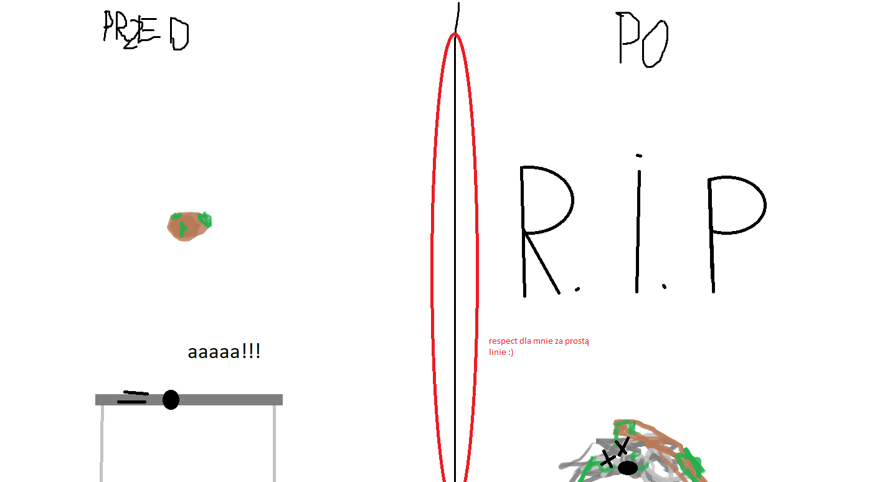

informacja odemnie: COCOMELON JEST ZŁYYYY !!!!!!!!! BARDZO ZŁY AAAAA JA CHCĘ ZNISZCZYĆ COCOMELONA MUAHAHAHAHAHA
żart dnia: Pieczarki to bardzo niebezpieczene grzyby. Ciągle każą mi piec jakiegoś Arka. Piecz-arka, Piecz-arka


odkrycie z szkoły: istnieją fale o częstotliwości energetycznej wyższej niż gamma. Są to fale lublisiowe.Taki Czarnobyl razy 10. Wytwarzane są kiedy Adam p. rozwałkuje lublisia swoim bidonem. Wtedy lubliś zaczyna promieniować. Tak jak mówiłam Czaronobyl razy 10. Obrazek stołu przed i po promieniowaniu lublisia.
